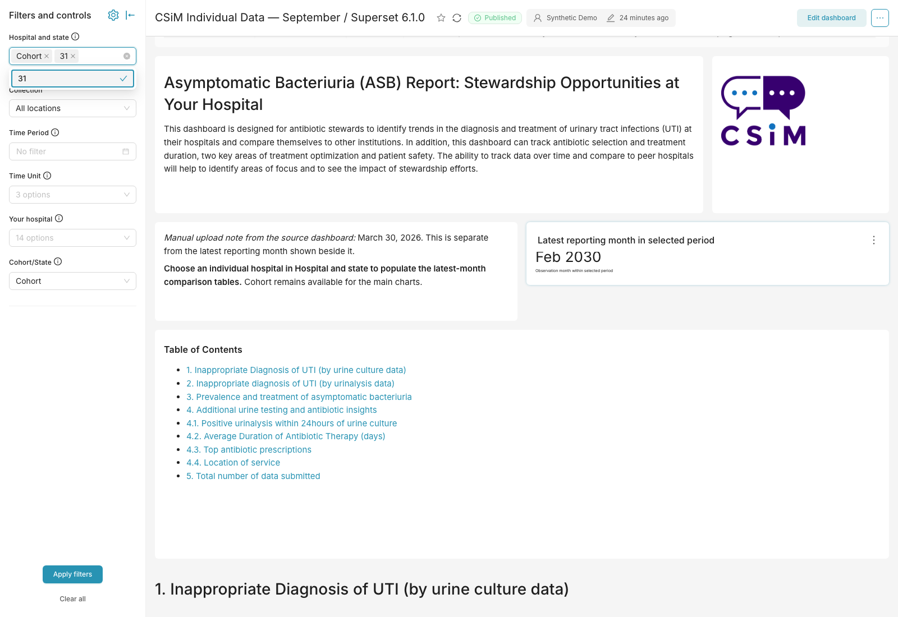
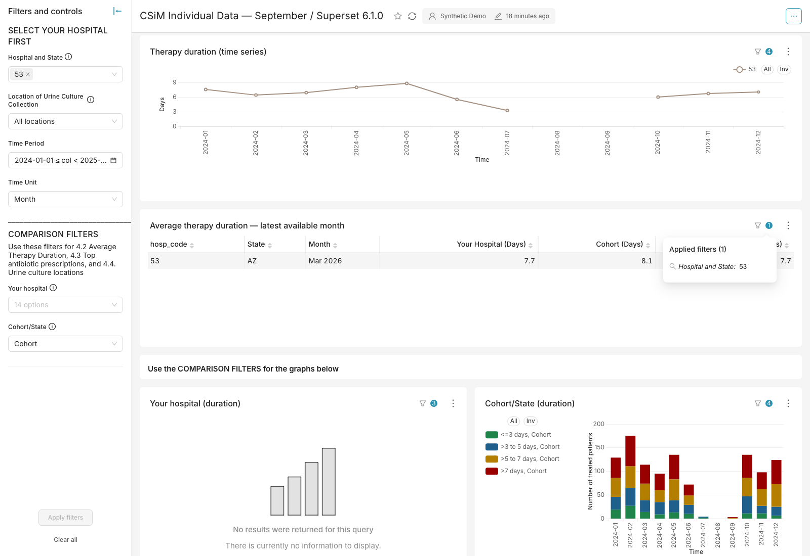
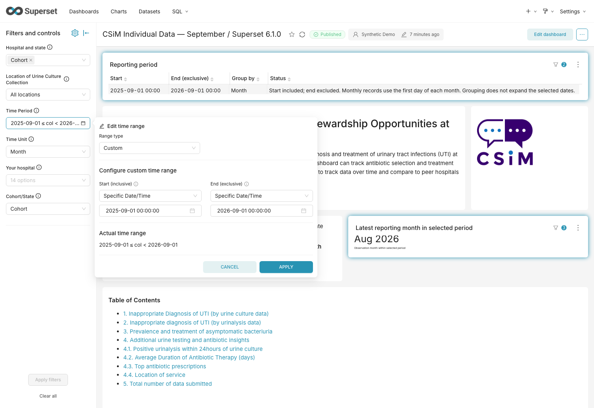
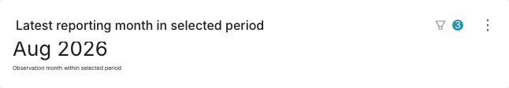
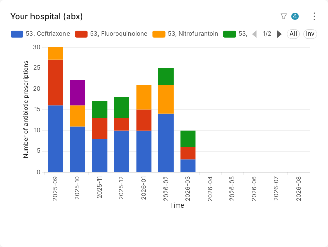
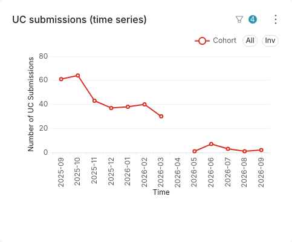
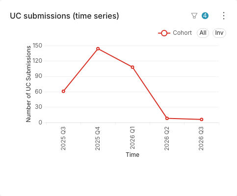
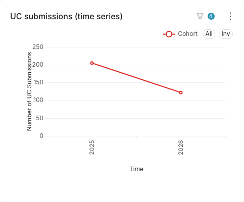

← CSiM dashboard overview
Review the CSiM dashboard
Start with the full September dashboard on official Superset 6.1.0. Use this guide to understand the dates, choose the right hospital controls, and review the remaining filter limitations.
What to review
| Date range | Time Period opens in Custom. Enter a start date and an exclusive end date in the left sidebar. |
|---|
| Month, quarter or year | Time Unit changes how the selected observations are grouped. It does not change the date range. |
|---|
| Latest Urine Culture Submission | The card calculates the last reporting month inside the chosen Time Period. Its title identifies reporting coverage; it does not indicate when a file was uploaded. |
|---|
| Comparison context | The lower comparison charts carry the selected hospital or comparison group in their legend so a screenshot remains understandable. |
|---|
| Chart colors | Yao's color assignments are preserved. A category keeps the same color when the legend includes a hospital code or comparison group. |
|---|
| Section links | Table of Contents links stay on this dashboard and keep the active filter state. Sections 4.1–4.4 are grouped under section 4. |
|---|
| Dashboard content | The dashboard contains 21 data panels, including the latest-month card. The reviewed September layout and wording are retained apart from the clarified seven-panel coverage and corrected 4.1 explanation. Dataset names remain familiar to editors. |
|---|
Five-minute review
- Choose a hospital and a date range in the left sidebar.
- Switch Time Unit from Month to Quarter to Year. Confirm that the values, order and labels remain understandable.
- Check the latest-reporting-month card and one main trend.
- Choose Your hospital and Cohort/State, then inspect the lower comparison legends.
- Compare the antibiotic, duration and collection-location colors across the hospital and cohort/state panels. The same category should have the same color.
- Use one Table of Contents link and confirm the same choices remain selected.
Known official 6.1.0 limitation
Clear all, then reselect in the left sidebar can leave a stale result. Moving filters to the left does not repair that Superset behavior. For this review, change individual selections or reload the dashboard after Clear all.
Reproduction: choose a hospital, use Clear all, then choose the same hospital again without reloading. The browser check below reselected hospital 31, but Superset combined it with the stale Cohort value and left the date range empty, exposing February 2030. The custom Superset comparison contains a source-level repair; the recommended dashboard intentionally stays on the official build.

Known gap reproduced on official 6.1.0: Cohort and hospital 31 are both selected after Clear all, while Time Period is empty.
Reporting coverage and upload date
Latest Urine Culture Submission is a reporting-coverage card. It is calculated from the observations within the selected hospital/state, location and Time Period.
For example, uploading July observations in September leaves July as the latest reporting month. The card does not record the date of that upload.
The current dashboard has no upload-date note. A later upload-date feature would need a separate, reliable record of successful uploads. How the dates differ →
Which hospital choice affects each chart?
The sidebar contains two groups. Selecting a hospital in the first does not select it in the second.
| Hospital and state | The main charts, including the 4.2 therapy trend and section 5 submissions trend. Choose one numeric hospital for the latest-month comparison tables. |
|---|
| Your hospital / Cohort/State | The paired charts in 4.2–4.4. Your hospital also controls the hospital total in section 5. |
|---|
| Time Period / Time Unit | The trends and paired charts use the chosen dates and grouping. The five overall charts and section 5 totals use all-time data. The two latest-month comparison tables choose their latest month independently. |
|---|
| Collection location | Applies to trends, duration/antibiotic pairs and section 5 totals. The location breakdown in 4.4 and latest-month comparison tables cover all locations. |
|---|
Seven panels now identify their independent date coverage. The five overall charts say “all reporting dates”; the two comparison tables say “latest available month” and show the month. Time Period and Time Unit are excluded from these panels, so their filter indicators match their calculations.

The table uses the hospital’s latest available month. The trend uses the chosen Time Period.
Section 4.1’s explanation is corrected: positive urinalysis submissions divided by urine culture submissions. Its measures are unchanged.
See screenshots of all seven panels and section 4.1 →
These are ordinary dashboard settings. They do not change the separate Clear all limitation.
How editors can check and maintain this
In Add/Edit Filters, use Scoping to choose the affected panels. Native dividers provide the sidebar headings. A chart’s filter icon lists its assigned filters; for a SQL-defined dataset, verify that changing the control actually changes the result as intended.
Filter scoping guide · Dividers and applied-filter indicators
Items already settled in the team notes
The hospital 53 count concern and the Historical/Current overlap question are marked resolved. They do not require a new counting rule or a hospital transition schedule. The two filter groups remain separate.
The Data & records dashboard explains source dependencies and links to the separate record-review table.
Browser-checked evidence
These captures show the official 6.1.0 dashboard before the latest wording and legend edits, using the supplied demonstration database. They are reference evidence, not a fresh acceptance run for those edits. The complete check covered all 11 date axes at 1024, 1280 and 1600 pixels for Month, Quarter and Year: 99 chart views, with no clipped, overlapping or missing supported labels.

Custom start and exclusive end dates open in the left sidebar.

The saved range ends before September 2026, so the card reports Aug 2026 instead of a future month.

The legend identifies hospital 53 while preserving Yao's category colors.

Month: chronological YYYY-MM labels.

Quarter: chronological YYYY Qn labels.

Year: simple year labels.
Keeping the colors consistent
Superset matches a saved color to the complete legend name. Adding a hospital code changes that name: Ceftriaxone becomes 53, Ceftriaxone. The saved dashboard assigns both names Yao's original color. New hospital codes or renamed categories need matching entries in the dashboard's color settings.
The palette check covers 66 chart views: all eleven date axes, Month/Quarter/Year, and two hospital/comparison selections. It compares the rendered colors with the April export. The supplied color settings match that export exactly.
CSiM dashboard requirements include accessibility and black-and-white printing. Preserving the palette does not replace reviewing those broader requirements.
What is part of this delivery
The recommended result is a versioned dashboard, datasets and ordinary Superset configuration that run on official Superset 6.1.0. No Superset application code change is required for the dashboard improvements above. The main dashboard and separate Data & records view are included; the standalone aggregate download is deferred until after the meeting.
The separate custom and development installations remain comparisons for control and importer improvements. They are not dependencies of this dashboard.